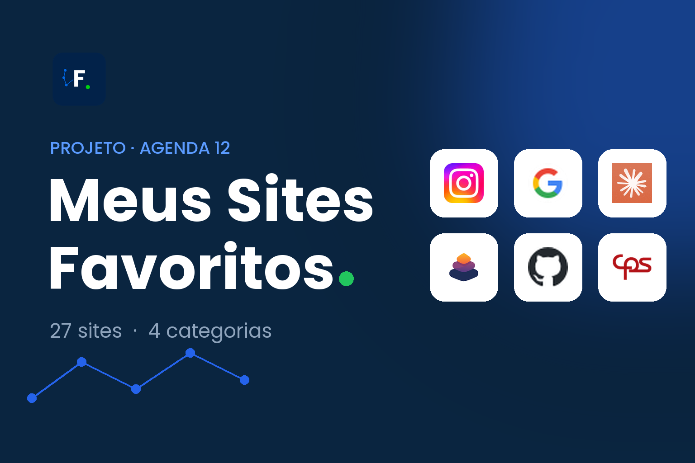
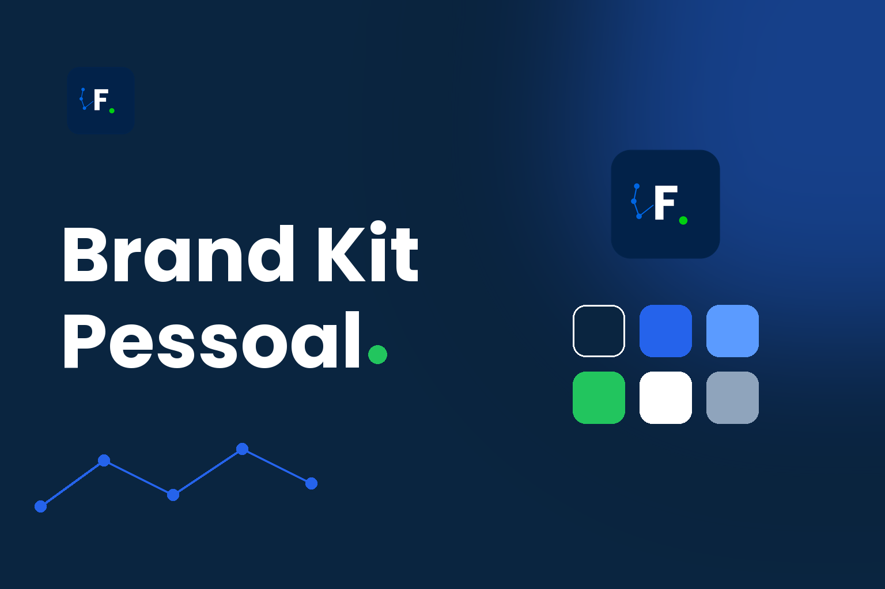

Desenvolvimento de Sistemas
Portfólio acadêmicoDesenvolvimento de Sistemas
Gosto de transformar tarefas repetitivas em sistemas que funcionam sozinhos e por isso atuo com tecnologia e automação de processos.
São José do Rio Preto/SP
Automação de Processos e Desenvolvimento Web
Desenvolvimento de Sistemas
Criar interfaces modernas e projetos digitais
Alguns projetos e atividades que representam minha evolução na área de desenvolvimento.
Site pessoal feito com HTML e Bootstrap, com perfil, projetos e contato, publicado no GitHub Pages.
Ver projeto
Página HTML comentada com os 27 sites que mais uso, separados em 4 categorias (Agenda 12, atualizada).
Ver projeto
Logotipo, paleta de cores e favicons da minha marca pessoal, prontos para usar em site, e-mail e redes sociais.
Ver projetoAberto a oportunidades, projetos e conexões na área de tecnologia.
Estou em constante aprendizado e disponível para trocar ideias, compartilhar projetos e construir novas conexões profissionais.
Localização: São José do Rio Preto/SP